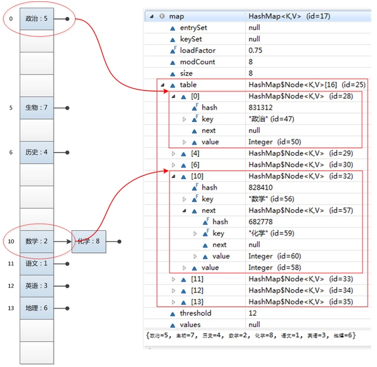
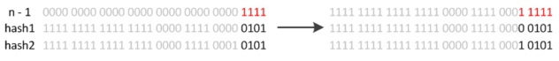
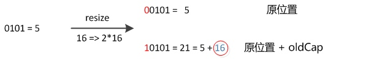
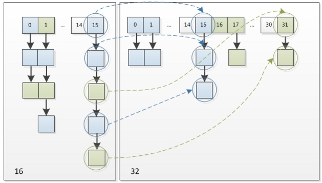

高性能MySQL - 创建高性能的索引
索引基础
索引可以包含一个或多个列的值。如果索引包含多个列，那么列的顺序也十分重要，因为MySQL只能高效地使用索引的最左前缀列。创建一个包含两个列的索引，和创建两个只包含一列的索引是大不相同的。
索引的类型
B-Tree索引
B-Tree通常意味着所有的值都是按顺序存储的，并且每一个叶子页到根的距离相同。
索引可以包含一个或多个列的值。如果索引包含多个列，那么列的顺序也十分重要，因为MySQL只能高效地使用索引的最左前缀列。创建一个包含两个列的索引，和创建两个只包含一列的索引是大不相同的。
B-Tree通常意味着所有的值都是按顺序存储的，并且每一个叶子页到根的距离相同。
当用户输入一个前缀时，碰到提示的候选词很多的时候，如何取舍，哪些展示在前面，哪些展示在后面？
用户在使用搜索引擎查找商家时，会输入大量的关键字，每一次输入就是对关键字的一次投票，那么关键字被输入的次数越多，它对应的查询就比较热门，所以需要查询的关键字记录下来，并且统计出每个关键字的频率，方便提示结果按照频率排序。
搜索引擎会通过日志文件把用户每次检索使用的所有检索串都记录下来。
chongqing, zhongqing -> cq, zq
Trie树即字典树，又称单词查找树或键树，是一种树形结构，一种哈希树的变种。
它的优点是：最大限度地减少无谓的字符串比较，查询效率比哈希表高。

从上图可知，当用户输入前缀i的时候，搜索框可能会展示以i为前缀的in，inn，int等关键词，再当用户输入前缀a的时候，搜索框里面可能会提示以a为前缀的ate等关键词。如此，实现搜索引擎智能提示suggestion的第一个步骤便清晰了
TopK算法用于解决统计热词的问题。解决TopK问题主要有两种策略：HashMap统计+排序（堆排序）。
HashMap统计：先对这批海量数据预处理。具体方法是：维护一个Key为Query字串，Value为该Query出现次数的HashMap。
该方案存在的问题是：
Trie树。Solr自带Suggest智能提示该方案存在的问题是：
Solrcloud建立单独的collection,利用Solr前缀查询实现专门为关键字建立一个索引collection，利用Solr前缀查询实现。Solr中的copyField能很好解决我们同时索引多个字段(汉字、pinyin, abbre)的需求，且field的multiValued属性设置为true时能解决同一个关键字的多音字组合问题。
public class PossibleReordering {
static int x = 0, y = 0;
static int a = 0, b = 0;
public static void main(String[] args) throws InterruptedException {
Thread one = new Thread(new Runnable() {
public void run() {
a = 1;
x = b;
}
});
Thread other = new Thread(new Runnable() {
public void run() {
b = 1;
y = a;
}
});
one.start();other.start();
one.join();other.join();
System.out.println(“(” + x + “,” + y + “)”);
}
}
这段代码的执行结果也可能是（0，0），因为，在实际运行时，代码指令可能并不是严格按照代码语句顺序执行的。
得到（0，0）结果的语句执行过程：

a=1和x=b这两个语句的赋值操作的顺序被颠倒了，或者说，发生了指令“重排序(reording)”
大多数现代微处理器都会采用将指令乱序执行的方法，在条件允许的情况下，直接运行当前有能力立即执行的后续指令，避免获取下一条指令所需数据时造成的等待，通过乱序执行的技术，处理器可以大大提高执行效率。
as-if-serial语义所有的动作都可以为了优化而被重排序，但是必须保证它们重排序后的结果和程序代码本身的应有结果是一致的。
int a = 1;
int b = 2;
int c = a + b;
将上面的代码编译成Java字节码或生成机器指令，可视为展开成了以下动作：
1. 对a赋值1
2. 对b赋值2
3. 取a的值
4. 取b的值
5. 将取到两个值相加后存入c
在上面5个动作中，动作1可能会和动作2、4重排序，动作2可能会和动作1、3重排序，动作3可能会和动作2、4重排序，动作4可能会和动作1、3重排序。但动作1和动作3、5不能重排序。动作2和动作4、5不能重排序。因为它们之间存在数据依赖关系，一旦重排，as-if-serial语义便无法保证
计算机系统中，为了尽可能地避免处理器访问主内存的时间开销，处理器大多会利用缓存（cache）以提高性能。

在这种模型下会存在一个现象，即缓存中的数据与主内存的数据并不是实时同步的，各CPU（或CPU核心）间缓存的数据并不是实时同步的。从程序的视角来看，就是同一个时间点，各个线程所看到的共享变量的值可能是不一致的。
根据Java内存模型中的规定，可以总结出以下几条happens-before规则。happens-before的前后两个操作不会被重排序且后者对前者的内存可见。
动作A都happens-before于该线程中的每一个动作B，其中，在程序中，所有的动作B都能出现在动作A之后。happens-before于每一个后续对同一监视器锁的加锁。volatile变量法则：对volatile域的写入操作happens-before于每一个后续对同一个域的读写操作。Thread.start()的调用会happens-before于每个启动线程的动作。happens-before于其他线程检测到这个线程已经终结、或者从Thread.join()调用中成功返回，或Thread.isAlive()返回false。interrupt happens-before于被中断的线程发现中断。happens-before于这个对象finalizer的开始。A happens-before于B，且B happens-before于C，则A happens-before于C在于提高查询效率，可以类比字典，如果要查mysql这个单词，我们肯定需要定位到m字母，然后从下往上找到y字母，再找到剩下的sql。如果没有索引，那么你可能需要把所有单词看一遍才能找到你想要的。
HashMap基于哈希表的Map接口的实现。此实现提供所有可选的映射操作，并允许使用null值和null键。（除了不同步和允许使用null之外，HashMap类与Hashtable大致相同）此类不保证映射的顺序，特别是它不保证该顺序恒久不变。值得注意的是
HashMap不是线程安全的，如果想要线程安全的HashMap，可以通过Collections类的静态方法synchronizedMap获得线程安全的HashMap。Map map = Collections.synchronizedMap(new HashMap());
HashMap的底层主要是基于数组和链表来实现的，它之所以有相当快的查询速度主要是因为它是通过计算散列码来决定存储的位置。HashMap中主要是通过key的hashCode来计算hash值的，只要hashCode相同，计算出来的hash值就一样。如果存储的对象对多了，就有可能不同的对象所算出来的hash值是相同的，这就出现了所谓的hash冲突。解决hash冲突的方法有很多，HashMap底层是通过链表来解决hash冲突的。

图中，左边部分代表哈希表，也称为哈希数组，数组的每个元素都是一个单链表的头节点，链表是用来解决冲突的，如果不同的key映射到了数组的同一位置处，就将其放入单链表中。右边部分则显示数组内部结构，HashMap其实就是一个Entry数组，Entry对象中包含了键和值，其中next也是一个Entry对象，它就是用来处理hash冲突的，形成一个链表。
transient Entry[] table;//存储元素的实体数组
transient int size;//存放元素的个数
int threshold; //临界值，当实际大小超过临界值时，会进行扩容，扩容大小为当前的2倍。threshold = 负载因子*容量
final float loadFactor; //负载因子
transient int modCount;//被修改的次数
其中比较重要的两个参数是容量(Capacity) 和 负载因子(Load factor)
Initial capacity: The capacity is the number of buckets in the hash table, The initial capacity is simply the capacity at the time the hash table is created.
Load factor: The load factor is a measure of how full the hash table is allowed to get before its capacity is automatically increased.
简单的说，Capacity就是bucket的大小，loadFactor就是bucket填满程度的最大比例。
loadFactor越大，填满的元素越多，好处是，空间利用率高了，但冲突的机会加大了，链表长度会越来越长,查找效率降低。
反之，loadFactor越小，填满的元素越少，好处是冲突的机会减小了，但空间浪费多了，表中的数据将过于稀疏（很多空间还没用，就开始扩容了）
因此,必须在 “冲突的机会” 与 “空间利用率” 之间寻找一种平衡与折衷. 这种平衡与折衷本质上是数据结构中有名的 “时-空” 矛盾的平衡与折衷.
如果机器内存足够，并且想要提高查询速度的话可以将loadFactor设置小一点；相反如果机器内存紧张，并且对查询速度没有什么要求的话可以将loadFactor设置大一点。不过一般取默认值0.75就好。
put和getput函数大致的思路为：
1、对key的hashCode()做hash，然后再计算index；
2、如果没碰撞直接放到bucket里；
3、如果碰撞了，以链表的形式存在buckets后；
4、如果碰撞导致链表过长(大于等于TREEIFY_THRESHOLD)，就把链表转换成红黑树；
5、如果节点已经存在就替换old value(保证key的唯一性)；
6、如果bucket满了(超过loadFactor * current capacity)，就要resize。
public V put(K key, V value)
{
// 对key的hashCode()做hash
return putVal(hash(key), key, value, false, true);
}
final V putVal(int hash, K key, V value, boolean onlyIfAbsent, boolean evict)
{
Node<K,V>[] tab; Node<K,V> p; int n, i;
// tab为空则创建
if ((tab = table) == null || (n = tab.length) == 0)
n = (tab = resize()).length;
// 计算index，并对null做处理
if ((p = tab[i = (n - 1) & hash]) == null)
tab[i] = newNode(hash, key, value, null);
else
{
Node<K,V> e; K k;
// 节点存在
if (p.hash == hash && ((k = p.key) == key || (key != null && key.equals(k))))
e = p;
// 该链为树
else if (p instanceof TreeNode)
e = ((TreeNode<K,V>)p).putTreeVal(this, tab, hash, key, value);
// 该链为链表
else
{
for (int binCount = 0; ; ++binCount)
{
if ((e = p.next) == null)
{
p.next = newNode(hash, key, value, null);
if (binCount >= TREEIFY_THRESHOLD - 1) // -1 for 1st
treeifyBin(tab, hash);
break;
}
if (e.hash == hash &&
((k = e.key) == key || (key != null && key.equals(k))))
break;
p = e;
}
}
// 写入
if (e != null)
{ // existing mapping for key
V oldValue = e.value;
if (!onlyIfAbsent || oldValue == null)
e.value = value;
afterNodeAccess(e);
return oldValue;
}
}
++modCount;
// 超过load factor*current capacity，resize
if (++size > threshold)
resize();
afterNodeInsertion(evict);
return null;
}
get函数大致思路如下：
1、bucket里的第一个节点，直接命中；
2、如果有冲突，则通过key.equals(k)去查找对应的entry；
3、若为树，则在树中通过key.equals(k)查找，O(logn)；
4、若为链表，则在链表中通过key.equals(k)查找，O(n)。
public V get(Object key)
{
Node<K,V> e;
return (e = getNode(hash(key), key)) == null ? null : e.value;
}
final Node<K,V> getNode(int hash, Object key)
{
Node<K,V>[] tab; Node<K,V> first, e; int n; K k;
if ((tab = table) != null && (n = tab.length) > 0 && (first = tab[(n - 1) & hash]) != null)
{
// 直接命中
if (first.hash == hash && // always check first node
((k = first.key) == key || (key != null && key.equals(k))))
return first;
// 未命中
if ((e = first.next) != null)
{
// 在树中get
if (first instanceof TreeNode)
return ((TreeNode<K,V>)first).getTreeNode(hash, key);
// 在链表中get
do
{
if (e.hash == hash && ((k = e.key) == key || (key != null && key.equals(k))))
return e;
} while ((e = e.next) != null);
}
}
return null;
}
resize的实现当put时，如果发现目前的bucket占用程度已经超过了loadFactor所希望的比例，那么就会发生resize。在resize的过程，简单的说就是把bucket扩充为2倍，之后重新计算index，把节点再放到新的bucket中。resize的注释是这样描述的：
Initializes or doubles table size. If null, allocates in accord with initial capacity target held in field threshold. Otherwise, because we are using power-of-two expansion, the elements from each bin must either stay at same index, or move with a power of two offset in the new table.
大致意思就是说，当超过限制的时候会resize，然而又因为我们使用的是2次幂的扩展(指长度扩为原来2倍)，所以，元素的位置要么是在原位置，要么是在原位置再移动2次幂的位置。
怎么理解呢？例如我们从16扩展为32时，具体的变化如下所示：

因此元素在重新计算hash之后，因为n变为2倍，那么n-1的mask范围在高位多1bit(红色)，因此新的index就会发生这样的变化：

因此，我们在扩充HashMap的时候，不需要重新计算hash，只需要看看原来的hash值新增的那个bit是1还是0就好了，是0的话索引没变，是1的话索引变成原索引+oldCap。可以看看下图为16扩充为32的resize示意图：

这个设计非常巧妙，既省去了重新计算hash值的时间，而且同时，由于新增的1bit是0还是1可以认为是随机的，因此resize的过程，均匀的把之前的冲突的节点分散到新的bucket了。
通过hash的方法，通过put和get存储和获取对象。存储对象时，我们将K/V传给put方法时，它调用hashCode计算hash从而得到bucket位置，进一步存储，HashMap会根据当前bucket的占用情况自动调整容量(超过loadFactor则resize为原来的2倍)。获取对象时，我们将K传给get，它调用hashCode计算hash从而得到bucket位置，并进一步调用equals()方法确定键值对。如果发生碰撞的时候，HashMap通过链表将产生碰撞冲突的元素组织起来，在Java 8中，如果一个bucket中碰撞冲突的元素超过某个限制(默认是8)，则使用红黑树来替换链表，从而提高速度。